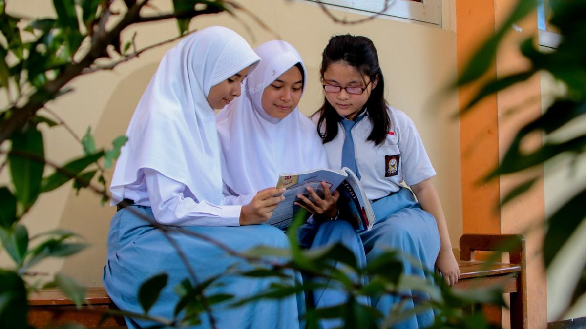

Kamu tidak harus menanggung semuanya sendirian
Ruang Aman adalah website kecil buatan kelompok kami tentang kesehatan mental dan perundungan di sekolah. Kami belajar bareng, mengumpulkan informasi dari sumber resmi, lalu menuliskannya dengan bahasa yang biasa kita pakai sehari-hari.
Yuk, mulai baca
Isi website ini
Kesehatan mental
Apa artinya, dan tanda apa saja yang sebaiknya tidak kita abaikan.
Baca selengkapnyaCari bantuan
Layanan resmi yang bisa dihubungi kalau kamu atau temanmu butuh dukungan.
Lihat layananCatatan dari kami: kami bukan psikolog. Website ini dibuat untuk belajar dan mengenali, bukan untuk mendiagnosis. Kalau rasanya sudah berat sekali, langsung buka halaman Panduan ya.
Butuh teman bicara sekarang?
Healing119 dari Kementerian Kesehatan bisa dihubungi setiap hari selama 24 jam. Telepon 119 ekstensi 8 atau buka healing119.id. Layanan ini memberi dukungan awal dan bukan pengganti terapi dari psikolog atau psikiater.